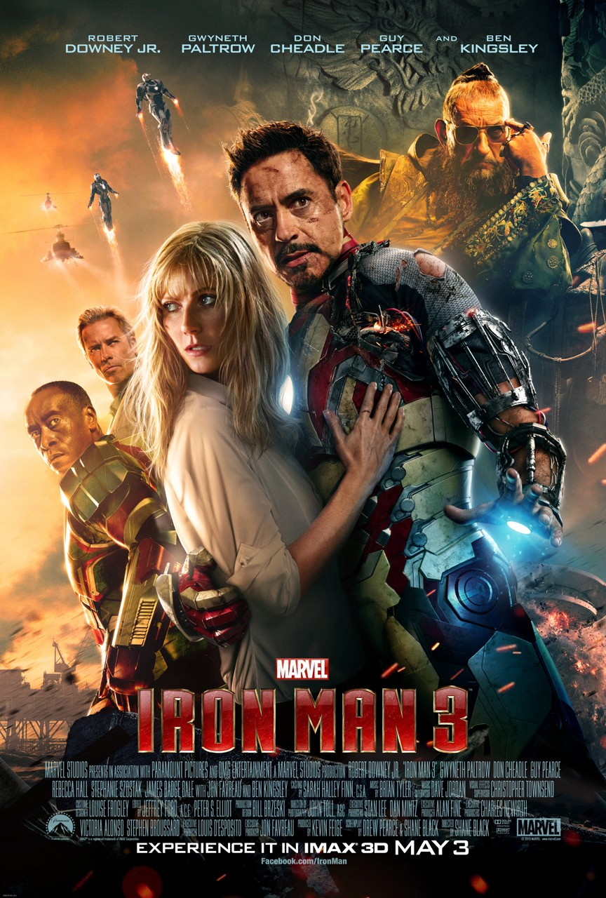
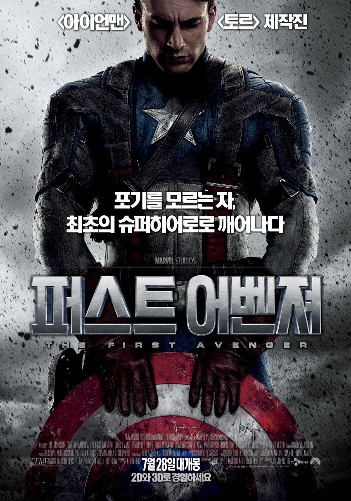
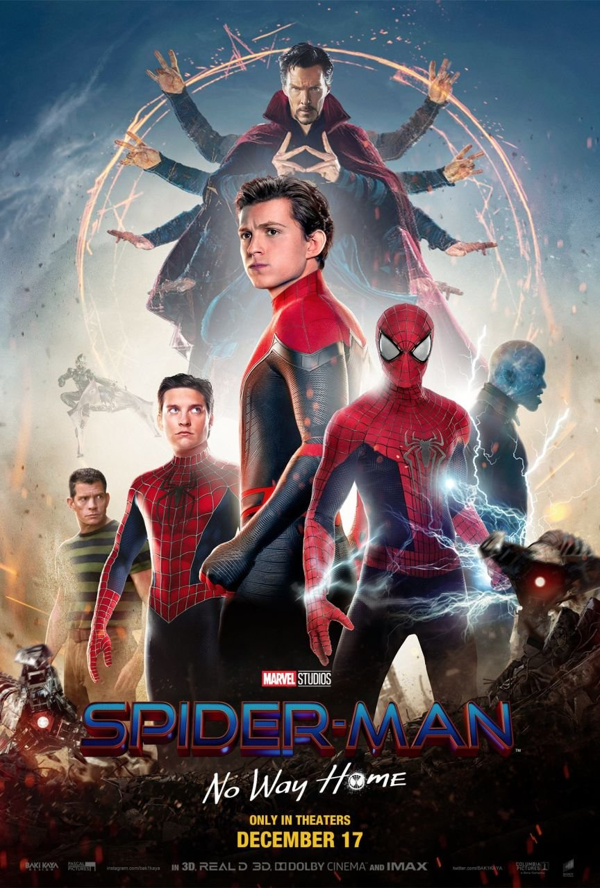
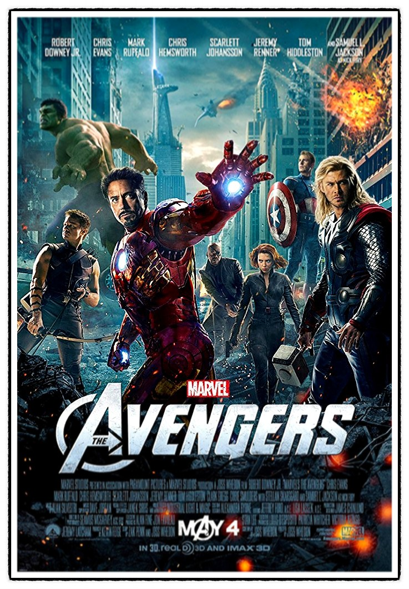
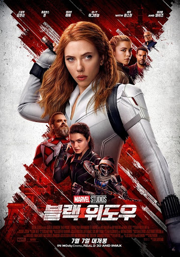
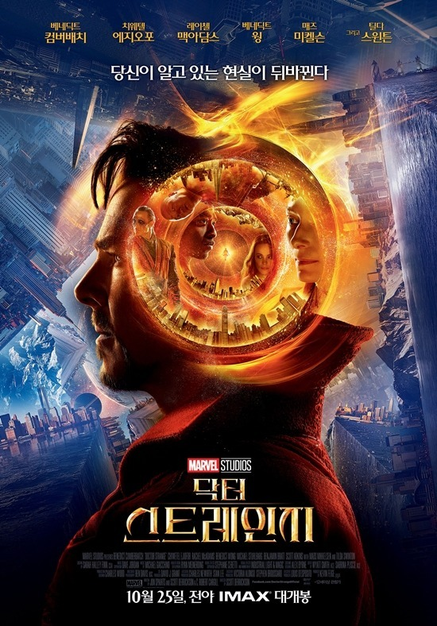

아이언맨3
어벤져스 뉴욕 사건의 트라우마로 인해 영웅으로서의 삶에 회의를 느끼는
토니 스타크(로버트 다우니 주니어). 그가 혼란을 겪는 사이 최악의
테러리스트 만다린(벤 킹슬리)을 내세운 익스트리미스 집단 AIM이 스타크
저택에 공격을 퍼붓는다. 이 공격으로 그에게 남은 건 망가진 수트 한벌
뿐. 모든 것을 잃어버린 그는 다시 테러의 위험으로부터 세계와 사랑하는
여인(기네스 팰트로)를 지켜내야 하는 동시에 머릿속을 떠나지 않던 한가지
물음의 해답도 찾아야만 한다. 과연 그가 아이언맨인가? 수트가
아이언맨인가?
토르 다크월드
어벤져스의 뉴욕 사건 후, 다시 신들의 고향인 아스가르드 왕국으로 돌아간
토르(크리스 헴스워스)와 로키(톰 히들스턴). 지구를 위협한 로키는 지하
감옥에 갇히고, 토르는 아버지 오딘(안소니 홉킨스)과 함께 우주의 질서를
재정립하기 위해 나선다. 1년 후, 지구에 혼자 남은 제인(나탈리 포트만)은
우연히 태초부터 존재해왔던 어둠의 종족 ‘다크 엘프’의 무기 ‘에테르’를
얻게 된다. 이 사실을 안 ‘다크 엘프’의 리더 ‘말레키스’는 ‘에테르’를
되찾기 위해 제인과 아스가르드를 공격하고, 토르는 사랑하는 여인 제인과
아스가르드 왕국을 지키기 위해 로키에게 위험한 동맹을 제안하게 된다.


캡틴아메리카 퍼스트어벤져
포기를 모르는 자의 새로운 이름 ‘퍼스트 어벤져’ 세계 전쟁으로 암흑에
빠진 시기, 한 남자가 군 입대를 자원한다. 그의 이름은 ‘스티브 로저스’.
남들보다 왜소하고 마른 체격으로 인해 입대마저 번번히 거부당하던 그는
포기를 모르는 근성과 강한 희생 정신을 인정받아 최고의 전사를 양성하는
‘슈퍼 솔져’ 프로젝트에 스카우트된다. 비밀리에 진행된 실험을 통해 가장
완벽한 육체와 인간의 한계를 초월한 신체 능력을 얻게 된 스티브. 그는
모두에게 ‘캡틴’으로 불리며, 시대의 영웅으로 새롭게 태어난다. 하지만
그의 등장에 맞서 거대한 ‘히드라’ 조직을 앞세운 적의 공격은 한층
막강해지고, 그 핵심에 선 ‘레드 스컬’은 인류를 위협하는 최후의 전투를
준비하는데... 세계를 위협하는 전쟁, 그 한가운데로 향한 ‘캡틴’
슈퍼히어로의 역사로 남을 그의 활약이 시작된다!
스파이더맨 : 홈커밍
‘시빌 워’ 당시 ‘토니 스타크’(로버트 다우니 주니어)에게 발탁되어 대단한
활약을 펼쳤던 스파이더맨 ‘피터 파커’(톰 홀랜드). 그에게 새로운 수트를
선물한 ‘토니 스타크’는 위험한 일은 하지 말라며 조언한다. 하지만 허세와
정의감으로 똘똘 뭉친 ‘피터 파커’는 세상을 위협하는 강력한 적
‘벌처’(마이클 키튼)에 맞서려 하는데… 아직은 어벤져스가 될 수 없는
스파이더맨 숙제보다 세상을 구하고 싶은 스파이더맨 그는 과연 진정한
히어로로 거듭날 수 있을 것인가!


어벤져스
지구의 안보가 위협당하는 위기의 상황에서 슈퍼히어로들을 불러모아
세상을 구하는, 일명 [어벤져스] 작전. 에너지원 ‘큐브’를 이용한 적의
등장으로 인류가 위험에 처하자 국제평화유지기구인 쉴드 (S.H.I.E.L.D)의
국장 닉 퓨리(사무엘 L.잭슨)는 [어벤져스] 작전을 위해 전 세계에 흩어져
있던 슈퍼히어로들을 찾아나선다. 아이언맨(로버트 다우니 주니어)부터
토르(크리스 헴스워스), 헐크(마크 러팔로), 캡틴 아메리카(크리스
에반스)는 물론, 쉴드의 요원인 블랙 위도우(스칼렛 요한슨), 호크
아이(제레미 레너)까지, 최고의 슈퍼히어로들이 [어벤져스]의 멤버로
모이게 되지만, 각기 개성이 강한 이들의 만남은 예상치 못한 방향으로
흘러가는데… 지구의 운명을 건 거대한 전쟁 앞에 [어벤져스] 작전은 성공할
수 있을까?
어벤져스:엔드게임
인피니티 워 이후 절반만 살아남은 지구 마지막 희망이 된 어벤져스 먼저
떠난 그들을 위해 모든 것을 걸었다! 위대한 어벤져스 운명을 바꿀 최후의
전쟁이 펼쳐진다!


블랙 위도우
어벤져스의 히어로 블랙 위도우, ‘나타샤 로마노프’ (스칼렛 요한슨)는
자신의 과거와 연결된 레드룸의 거대한 음모와 실체를 깨닫게 된다. 상대의
능력을 복제하는 빌런 ‘태스크마스터’와 새로운 위도우들의 위협에 맞서
목숨을 건 반격을 시작하는 ‘나타샤’는 스파이로 활약했던 자신의 과거 뿐
아니라, 어벤져스가 되기 전 함께했던 동료들을 마주해야만 하는데…
폭발하는 리얼 액션 카타르시스! MCU의 새로운 시대를 시작할 첫 액션
블록버스터를 만끽하라!
닥터 스트레인지
불의의 사고로 절망에 빠진 천재 외과의사 ‘닥터 스트레인지(베네딕트
컴버배치)’. 마지막 희망을 걸고 찾아 간 곳에서 ‘에인션트 원(틸다
스윈튼)’을 만나 세상을 구원할 강력한 능력을 얻게 되면서, 모든 것을
초월한 최강의 히어로로 거듭나는데...
